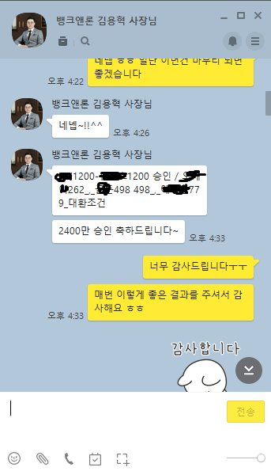
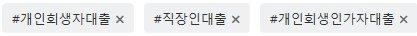

[개인회생자대출] 재회생 인가후 대출 - 김용혁 사장님 이번에도 너무 감사합니다!
안녕하세요
지난 6월 이후 또 김용혁 사장님께 도움을 받아 대출실행이 돼서 후기 남깁니다!
- 급여 : 세후 약 190만원
- 사대보험 : 유
- 재직기간 : 2년 3개월
- 변제금 : 약70만원 / 36개월 중 24회차 변제(미납 X)
- 기대출 : 대부 각 800,500,500,250만원 보유(총 4건)

기존 기대출 건 대환 및 추가대출 건으로 문의드렸는데,
바로 저축은행 두곳으로 알아봐주셨어요.
하지만 요즘 정부에서 대출규제 때문인지 부결됐더라구요ㅜㅜ
물론 제가 소득대비 기대출도 많고 건수도 많아 그런 부분도 있던것 같습니다.
그래서 바로 다른 업체로 알아봐주셨는데,
좀 어려울 것 같았지만 사장님이 힘써주신 덕분에
한번에 승인이돼서 연계사 끼고 각 1200만원씩 총 2400만원의 승인을 받았습니다!
덕분에 건수도 줄이고 금리도 20%로 낮추게 되어 너무 기뻤습니다.
24%에서 20%로 바꾸니까 체감도 크더라구요 ㅎㅎ
항상 친절하고 빠른 대응 해주셔서 너무 감사드려요~
내년엔 대출규제가 완화가 되어 저축은행으로 대환 다시 했으면 좋겠네요
좋은날 되세요~
